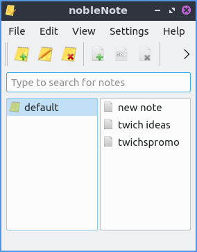
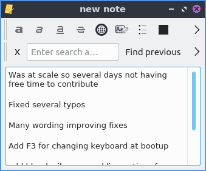
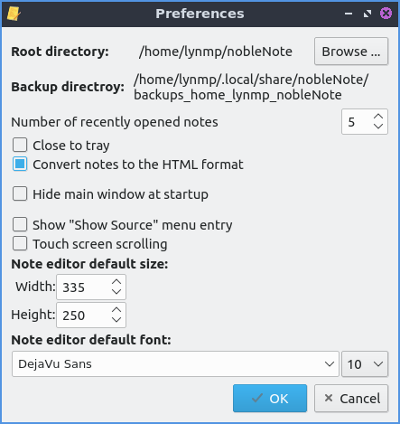

Chapter 2.4.6 nobleNote¶
nobleNote is the default application to take a notes on Denios-OS. nobleNote also automatically saves whatever you enter into a note.
Usage¶
To start a new note right click on the right hand column and select , press the white piece of paper with a green plus button, or . Then enter a title for this note by typing it. To open a note double click on that note from the right hand column which will open a new window with your note in it. To input text in the note type in the main body of this window after clicking on it. To rename your note to something, right click on the name of the note , press Control+Shift+R, or .
To select a different notebook to keep your notes organized click on it on the left hand column. If you wish to delete a notebook right click on a notebook and , with the notebook highlighted press Control + D, or . To add a new notebook press Control+N or .
To delete a note click on the note and press the yellow paper button with a red X on it, press Control + Shift + D, or edit .
To get back a note you deleted press Control+T or . You can then see your deleted notes and select from deleted notes on the left hand column and then the content of the note on the right hand column. To restore a note press the Restore button. To permanently delete a note press the Delete button and then press Yes at the confirmation dialog.
To import notes from a file .
To search through your notes for a particular string enter what you want to search for in the search bar which says Type to search for notes.
If you make a mistake typing and want to undo your changes press Control + z or . If you wish to paste text into nobleNote press Control + v or . To copy text from your note press Control+C or right click and select . To select all text in a note press Control +A.
To toggle showing the toolbar press Control +Shift +T or .
To bring back up your note nobleNote will leave a notebook icon in the system tray on the lower right hand corner of the panel. To bring the notes backup after closing them left click on the tray icon. To hide the main window right click on the tray icon and select . To bring back the main menu right click and select . To fully close nobleNote right click on the tray icon or press Control+Q.
To search a note for something type into the bar to find something in your note. To go to your next result press the Find next button. To find the previous result press the Find previous button. To change your font first press the > button and then select your font from the drop down on the left. To change your font size of your notes first press the >> button and then select your font size from the drop down to the right. To hide searching for something press the X button to the far left. To make a case sensitive search press the > and check the Case sensitive checkbox.
To make the text on your note bold press Control+B or the a button. To make your text on your note italic press Control+I or the a button. To underline your text press my underlined a button. To clear all formatting press the Aa button. To add a bullet point list press the button that looks like a bullet point list. To insert a hyperlink press Control+K or press the button looking like a globe. Then type or paste your link in the Address field and press the OK button. To change your font color for your notes press left click the color square to the left. To highlight your text first select the text and then press the square to the right and choose the color you want. To strike things out press the button with the line through it. To make bullet points in a list press the button with bullet points and a horizontal line.
Screenshots¶
 Version¶
Denios-OS ships with version 1.2.0 of nobleNote.
How to Launch¶
To launch nobleNote go to the menu or run
noblenote
on the commandline. The icon for nobleNote looks like a yellow pad of paper with a black lines.
Customizing¶
To change preferences of nobleNote press Control +P or . To keep nobleNote in your system tray after you close the nobleNote window check/uncheck the Close to tray checkbox. If you want to toggle showing notes in HTML format check/uncheck the Convert notes to the HTML format. To hide the main window when you open nobleNote check the Hide main window at startup. If you want to toggle the menu entry to show source check/uncheck the Show “Show source” menu entry. To reverse the direction of scrolling in nobleNote check the touch screen scrolling checkbox.
To change how wide to make the default for the new note editor Width field to how big to make the editor for the note. To change how high to make the editor size change the Height field. To change what the default font would be for editing is the large bar to the left under Note editor default font. To change the default font size change in the small to the right with a number.
